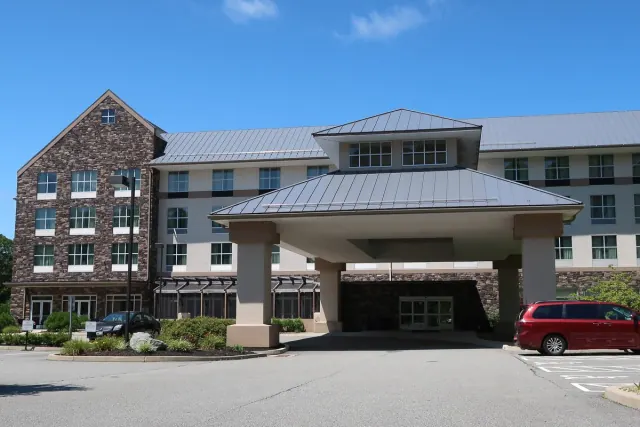
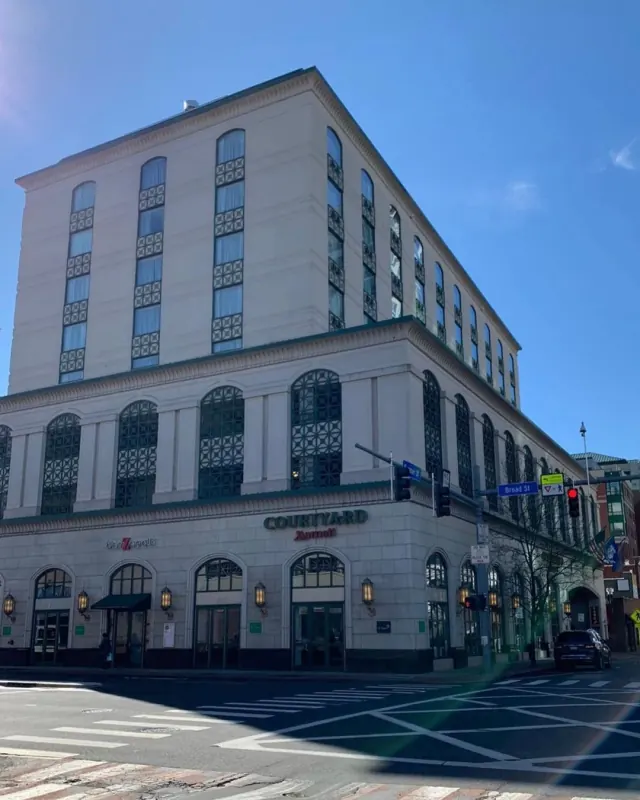
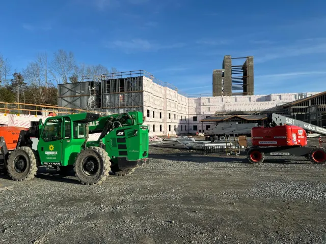
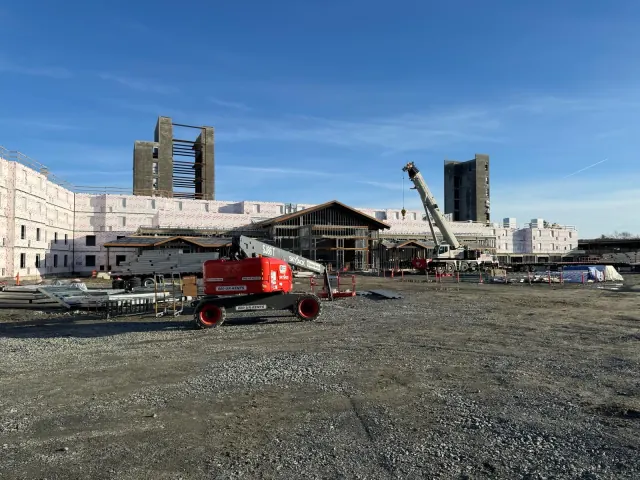
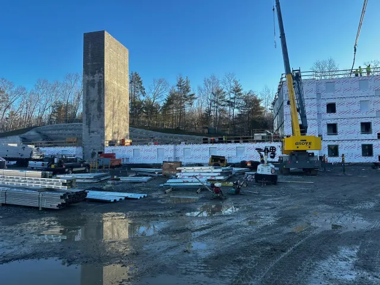

ExhibitsAnexos
See hotel and multifamily exteriors, plus work in progress on site.Mira exteriores de hoteles y edificios multifamiliares, además de trabajos en curso.
Project recordRegistro de proyectos
- Great Wolf LodgeGreat Wolf Lodge
- ConnecticutConnecticut
- EIFS for the hotel and water park.EIFS para el hotel y parque acuático.
- Hilton hotelHotel Hilton
- New London, CTNew London, CT
- Exterior restoration.Restauración exterior.
- Shelton apartment buildingEdificio de apartamentos en Shelton
- Shelton, CTShelton, CT
- Thin brick and stucco.Ladrillo delgado y estuco.
- Maple Hill FarmMaple Hill Farm
- Fairfield, CTFairfield, CT
- Traditional stucco.Estuco tradicional.
 Open Exhibit A in a larger viewAmpliar Anexo A
Open Exhibit A in a larger viewAmpliar Anexo A
 Open Exhibit B in a larger viewAmpliar Anexo B
Open Exhibit B in a larger viewAmpliar Anexo B


Open Exhibit C in a larger viewAmpliar Anexo C Open Exhibit D in a larger viewAmpliar Anexo D
Open Exhibit D in a larger viewAmpliar Anexo D


Open Exhibit E in a larger viewAmpliar Anexo E Open Exhibit F in a larger viewAmpliar Anexo F
Open Exhibit F in a larger viewAmpliar Anexo F
 Open Exhibit G in a larger viewAmpliar Anexo G
Open Exhibit G in a larger viewAmpliar Anexo G
 Open Exhibit H in a larger viewAmpliar Anexo H
Open Exhibit H in a larger viewAmpliar Anexo H
 Open Exhibit I in a larger viewAmpliar Anexo I
Open Exhibit I in a larger viewAmpliar Anexo I
 Open Exhibit J in a larger viewAmpliar Anexo J
Open Exhibit J in a larger viewAmpliar Anexo J


Open Exhibit K in a larger viewAmpliar Anexo K

Open Exhibit L in a larger viewAmpliar Anexo L

Open Exhibit M in a larger viewAmpliar Anexo M Open Exhibit N in a larger viewAmpliar Anexo N
Open Exhibit N in a larger viewAmpliar Anexo N
 Open Exhibit O in a larger viewAmpliar Anexo O
Open Exhibit O in a larger viewAmpliar Anexo O